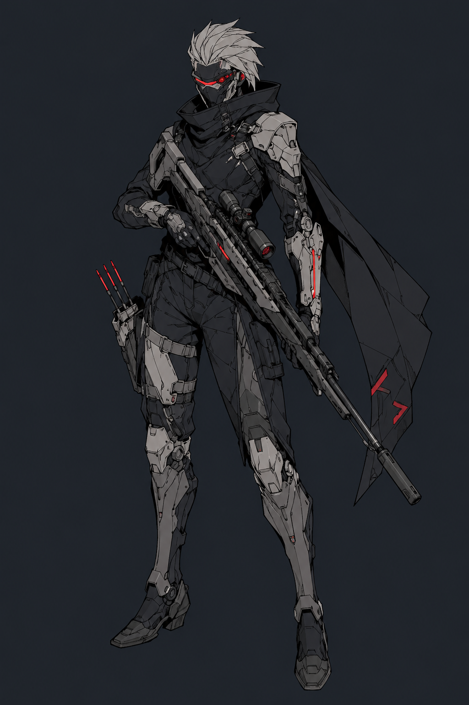
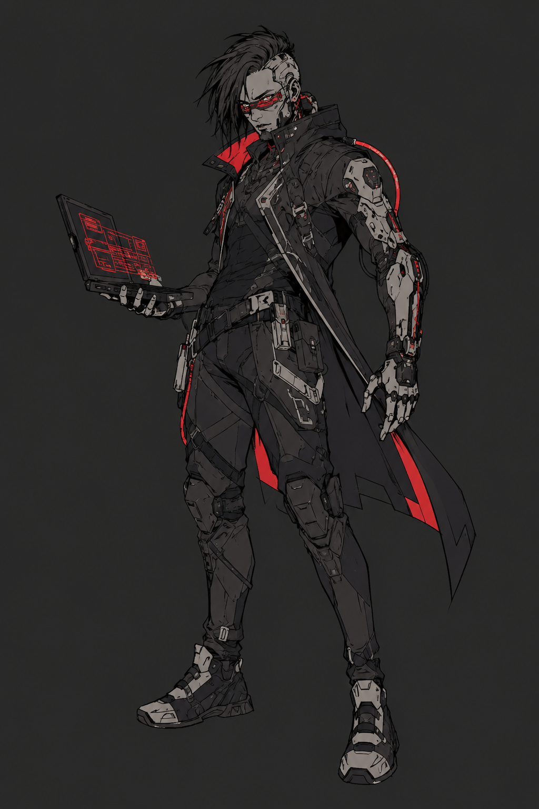
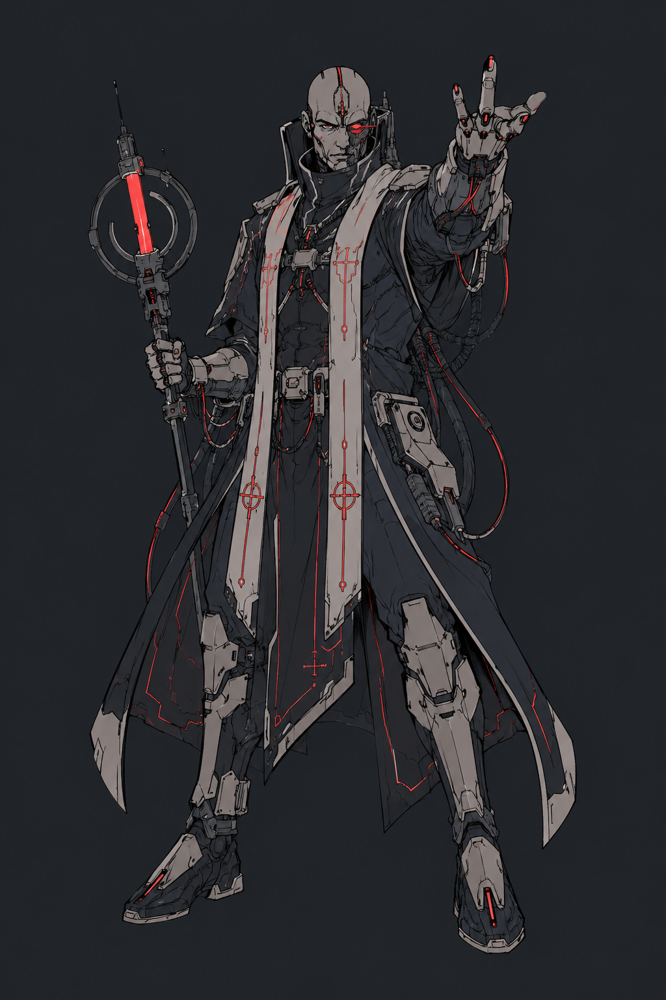

◈ Выбери путь ◈
Классы & Пути
Класс — не профессия. Это то чем ты стал.
То что уже нельзя изменить обратно.
◈ Доступные классы

ИЗОБРАЖЕНИЕ
КЛАССА
КЛАССА
◈ КЛАСС
Штурмовик
«Тот кто идёт первым и остаётся последним»
Штурмовик не побеждает потому что сильнее. Он побеждает потому что не останавливается.
Там где другие ищут укрытие — он давит. Там где другие отступают — он входит глубже.
Боль для него не сигнал остановиться. Это подтверждение что он ещё жив и движется вперёд.
◆ Прокачка
7 УРОВНЕЙ
1
УР.
ОСНОВА
Броня из мяса
Когда штурмовик получает урон снижающий его до половины здоровья или ниже — он немедленно совершает бесплатную атаку ближним боем по ближайшей цели в радиусе. Одноразово за бой.
Кроме того — при падении до половины здоровья штурмовик автоматически проходит бросок Крепости на сохранение сознания без броска.
Кроме того — при падении до половины здоровья штурмовик автоматически проходит бросок Крепости на сохранение сознания без броска.
2
УР.
ПУТЬ — ВЫБОР
Путь
◈ ПУТЬ А
Путь Стены
Ближний бой и дробящее оружие. Ты стоищь впереди как несокрушимая стена.
Атаки дробящим оружием при попадании накладывают Оглушён на 1 ход если бросок атаки превысил сложность на 3 и более.
1/бой — Прорыв: переместиться сквозь клетки занятые врагами без атаки по возможности. Все кого прошёл насквозь получают урон равный кости Напора.
Атаки дробящим оружием при попадании накладывают Оглушён на 1 ход если бросок атаки превысил сложность на 3 и более.
1/бой — Прорыв: переместиться сквозь клетки занятые врагами без атаки по возможности. Все кого прошёл насквозь получают урон равный кости Напора.
◈ ПУТЬ Б
Путь Давления
Среднее расстояние, дробовики и пулемёты. Ты не даёшь врагу даже подумаь поднять голову.
Для броска на попадание с дальним оружием вы можете использовать Напор вместо проворства
2/бойШквал: в этот ход атаки дальним оружием не провоцируют атаку по возможности даже в ближнем бою.
Для броска на попадание с дальним оружием вы можете использовать Напор вместо проворства
2/бойШквал: в этот ход атаки дальним оружием не провоцируют атаку по возможности даже в ближнем бою.
3
УР.
ПОРОГ — ХАРАКТЕРИСТИКА
Крепче
+1 к максимуму Крепости и Напора (макс 3).
Штурмовик игнорирует требования брони или оружия связаные с напором до 4 уровня напона.
Штурмовик игнорирует требования брони или оружия связаные с напором до 4 уровня напона.
4
УР.
РОСТ — УСИЛЕНИЕ ПУТИ
Отточено
◈ ПУТЬ СТЕНЫ
Удержание
Эффект Оглушения от дробящего теперь срабатывает при превышении сложности на 2, а не 3.
Удержание: враг которого штурмовик атаковал в ближнем бою уменшает свое перемещение на 2 до следующего хода.
Удержание: враг которого штурмовик атаковал в ближнем бою уменшает свое перемещение на 2 до следующего хода.
◈ ПУТЬ ДАВЛЕНИЯ
Сектор огня
При атаке в упор (до 3 клеток) дробовиком или пулемётом сложность попадания снижается на 1 сложность
Новая механика Сектор огня: если враг пытается войти в ближний бой с штурмовиком через открытое пространство без укрытия — штурмовик совершает бесплатную атаку дальним оружием без атаки по возможности от врага.
Новая механика Сектор огня: если враг пытается войти в ближний бой с штурмовиком через открытое пространство без укрытия — штурмовик совершает бесплатную атаку дальним оружием без атаки по возможности от врага.
5
УР.
ПОРОГ — ХАРАКТЕРИСТИКА
Не сдаётся
+1 к максимуму Крепости и Напора (макс 4).
1/день: Когда штурмовик должен получить травму — он проходит бросок Крепости сложности 9. При успехе травма заменяется состоянием Кровотечение.
1/день: Когда штурмовик должен получить травму — он проходит бросок Крепости сложности 9. При успехе травма заменяется состоянием Кровотечение.
6
УР.
ПОРОГ — ХАРАКТЕРИСТИКА
Под огнём
+1 к максимуму Напора (макс 5).
Пока штурмовик находится под воздействием хотя бы одного негативного состояния — его перемещение увеличивается на 2 клетки и броски атаки совершаются с преимуществом. Как только все состояния сняты — бонус исчезает.
Пока штурмовик находится под воздействием хотя бы одного негативного состояния — его перемещение увеличивается на 2 клетки и броски атаки совершаются с преимуществом. Как только все состояния сняты — бонус исчезает.
7
ПИК
ИТОГ — ВЕРШИНА КЛАССА
Точка невозврата
Штурмовик прошёл достаточно боёв чтобы понять: он не может остановиться. Не умеет. Это и есть его пик — и его цена.
◈ ПУТЬ СТЕНЫ
Живая Стена
Пока штурмовик находится в сознании — он считается тяжелым укрытием для союзника стоящего за ним.
1/бой — Выдержу всё: при достижении 0 здоровья штурмовик не падает, а вместо этого восстанавливает здоровье до половины от максимума.
1/бой — Выдержу всё: при достижении 0 здоровья штурмовик не падает, а вместо этого восстанавливает здоровье до половины от максимума.
◈ ПУТЬ ДАВЛЕНИЯ
Живой Огонь
Все враги в секторе обстрела (радиус 5 клеток) имеют уменьшенную сложность попадания по ним на одну сложность.
1/бой — Подавление: один раунд враги входящие в сектор обсстрела получают провоцыворующую атаку по возможности от штурмовика.
1/бой — Подавление: один раунд враги входящие в сектор обсстрела получают провоцыворующую атаку по возможности от штурмовика.

ИЗОБРАЖЕНИЕ
КЛАССА
КЛАССА
◈ КЛАСС
Стрелок
«Видит дальше чем другие — и решает раньше»
Стрелок — это не тот кто хорошо стреляет. Хорошо стреляют многие.
Стрелок — это тот кто понимает бой целиком: где будет враг через три секунды,
куда смотрят союзники, какая позиция закрывает максимум углов.
Дальний бой для него не дистанция — это способ мышления.
Путь определяет к чему он применяет это мышление: к одной точке на карте
или ко всей карте сразу.
◆ Прокачка
7 УРОВНЕЙ
1
УР.
ОСНОВА
Холодный глаз
Стрелок читает поле боя прежде чем на нём что-то происходит.
В начале каждого боя стрелок может бесплатно обозначить одну позицию на карте как точку контроля. Атаки из этой позиции совершаются с преимуществом до тех пор пока он её не покинет.
Кроме того — стрелок никогда не застигается врасплох. Даже при внезапном нападении он действует в первом раунде без штрафов.
В начале каждого боя стрелок может бесплатно обозначить одну позицию на карте как точку контроля. Атаки из этой позиции совершаются с преимуществом до тех пор пока он её не покинет.
Кроме того — стрелок никогда не застигается врасплох. Даже при внезапном нападении он действует в первом раунде без штрафов.
2
УР.
ПУТЬ — ВЫБОР
Дистанция
◈ ПУТЬ А
Снайпер
Один выстрел. Один результат. Всё остальное — шум.
Стрелок получает механику Прицеливания: каждый ход без движения и без других действий добавляет +2 к следующему броску атаки (макс. +6 за 3 хода). Любое перемещение или действие — накопленное сбрасывается.
Атаки снайпера против цели которая не знает о его присутствии совершаются с преимуществом и игнорируют лёгкое укрытие.
Стрелок получает механику Прицеливания: каждый ход без движения и без других действий добавляет +2 к следующему броску атаки (макс. +6 за 3 хода). Любое перемещение или действие — накопленное сбрасывается.
Атаки снайпера против цели которая не знает о его присутствии совершаются с преимуществом и игнорируют лёгкое укрытие.
◈ ПУТЬ Б
Офицер
Видит не цель — видит всю картину. Его сила в том что рядом с ним
все остальные становятся точнее.
Раз в ход как бесплатное действие офицер может отдать короткую команду одному союзнику: тот получает преимущество на следующую атаку или перемещение.
Союзники в радиусе 4 клеток от офицера получают +1 к инициативе и не могут быть застигнуты врасплох пока он в сознании.
Раз в ход как бесплатное действие офицер может отдать короткую команду одному союзнику: тот получает преимущество на следующую атаку или перемещение.
Союзники в радиусе 4 клеток от офицера получают +1 к инициативе и не могут быть застигнуты врасплох пока он в сознании.
3
УР.
ПОРОГ — ХАРАКТЕРИСТИКА
Острее
Разум начинает работать быстрее чем раньше казалось возможным.
+1 к максимуму Разума (макс 3).
Стрелок получает пассивную механику Чтения: раз за бой может задать мастеру один вопрос о намерениях или позиции видимого врага — и получить честный ответ. Это не магия — это наблюдательность.
+1 к максимуму Разума (макс 3).
Стрелок получает пассивную механику Чтения: раз за бой может задать мастеру один вопрос о намерениях или позиции видимого врага — и получить честный ответ. Это не магия — это наблюдательность.
4
УР.
РОСТ — УСИЛЕНИЕ ПУТИ
Отработано
◈ СНАЙПЕР
Мёртвая точка
Максимальный бонус Прицеливания теперь достигается за 2 хода вместо 3.
При полном прицеливании и попадании — стрелок может выбрать одно: нанести двойной урон или наложить состояние (Сбит с ног, Оглушён или Кровотечение — на выбор). Оба эффекта одновременно недоступны.
При полном прицеливании и попадании — стрелок может выбрать одно: нанести двойной урон или наложить состояние (Сбит с ног, Оглушён или Кровотечение — на выбор). Оба эффекта одновременно недоступны.
◈ ОФИЦЕР
Тактическая сетка
Бесплатная команда теперь может выдаваться двум союзникам за ход.
Новая способность Перегруппировка: раз за бой офицер может переместить одного союзника в радиусе 6 клеток на 3 клетки в любом направлении — без траты их хода. Союзник должен быть в сознании и слышать команду.
Новая способность Перегруппировка: раз за бой офицер может переместить одного союзника в радиусе 6 клеток на 3 клетки в любом направлении — без траты их хода. Союзник должен быть в сознании и слышать команду.
5
УР.
ПОРОГ — ХАРАКТЕРИСТИКА
Позиция
Тело начинает делать то что раньше требовало усилий.
+1 к максимуму Проворства (макс 4).
Стрелок получает бесплатное перемещение на 2 клетки в начале каждого хода если он не атаковал в прошлом ходу. Смена позиции без потери темпа.
+1 к максимуму Проворства (макс 4).
Стрелок получает бесплатное перемещение на 2 клетки в начале каждого хода если он не атаковал в прошлом ходу. Смена позиции без потери темпа.
6
УР.
ПОРОГ — ХАРАКТЕРИСТИКА
Контроль
Стрелок перестаёт реагировать на бой. Он его направляет.
+1 к максимуму Разума (макс 5).
Раз за бой стрелок может объявить Зону контроля — область 3×3 клетки в пределах видимости. Все броски атаки врагов внутри зоны совершаются с помехой до начала следующего хода стрелка. Это работает через давление, позицию и предсказание — не через магию.
+1 к максимуму Разума (макс 5).
Раз за бой стрелок может объявить Зону контроля — область 3×3 клетки в пределах видимости. Все броски атаки врагов внутри зоны совершаются с помехой до начала следующего хода стрелка. Это работает через давление, позицию и предсказание — не через магию.
7
ПИК
ИТОГ — ВЕРШИНА КЛАССА
Последний аргумент
◈ СНАЙПЕР
Приговор
Снайпер может потратить весь раунд на подготовку —
без движения, без других действий. В следующем ходу его атака
становится Приговором:
Попадание игнорирует броню полностью. Урон максимальный без броска. Если цель выжила — она получает состояние Паника на 1д4 хода.
Один раз за сессию.
Попадание игнорирует броню полностью. Урон максимальный без броска. Если цель выжила — она получает состояние Паника на 1д4 хода.
Один раз за сессию.
◈ ОФИЦЕР
Инициатива
Офицер перекраивает бой одной командой.
Раз за сессию — Общая инициатива: все союзники которые слышат офицера немедленно совершают по одному бесплатному действию вне очереди. Порядок офицер определяет сам.
После использования офицер пропускает следующий ход — цена координации такого масштаба.
Раз за сессию — Общая инициатива: все союзники которые слышат офицера немедленно совершают по одному бесплатному действию вне очереди. Порядок офицер определяет сам.
После использования офицер пропускает следующий ход — цена координации такого масштаба.

ИЗОБРАЖЕНИЕ
КЛАССА
КЛАССА
◈ КЛАСС
Техник
«Понимает как устроено всё — и знает как это сломать или собрать заново»
Техник не видит мир как набор угроз. Он видит его как набор систем.
Каждый замок — механизм. Каждый имплант — уязвимость. Каждая куча мусора —
детали которым не нашли применение. Хакер смотрит на существующее и думает
как разобрать. Оператор смотрит на поле боя и думает сколько точек контроля
можно добавить прямо сейчас.
◆ Прокачка
7 УРОВНЕЙ
1УР.
ОСНОВА
Руки знают
Техник не думает об инструментах — он просто берёт и делает.
Техник никогда не получает штраф за использование повреждённого снаряжения. Сломанные предметы работают как повреждённые, повреждённые — как исправные.
Во время короткого отдыха техник может починить любой предмет с состоянием «Повреждено» до «OK» без материалов. Только руки и время.
Техник никогда не получает штраф за использование повреждённого снаряжения. Сломанные предметы работают как повреждённые, повреждённые — как исправные.
Во время короткого отдыха техник может починить любой предмет с состоянием «Повреждено» до «OK» без материалов. Только руки и время.
2УР.
ПУТЬ — ВЫБОР
Специализация
◈ ПУТЬ А
Хакер
Системы, сети, импланты. Ты не взламываешь замки — ты переписываешь правила по которым они работают.
Получает Оперативную память = макс. кости Техники + уровень персонажа. Все способности тратят память при использовании. После длинного отдыха восстанавливается полностью.
Стартовые способности: Ping.exe (1), Override.mp4 (2), Virus 0fa12 (3), Data_Leec.bat (2). Новые изучаются набором нетраннера. Требует технический объект в радиусе.
Получает Оперативную память = макс. кости Техники + уровень персонажа. Все способности тратят память при использовании. После длинного отдыха восстанавливается полностью.
Стартовые способности: Ping.exe (1), Override.mp4 (2), Virus 0fa12 (3), Data_Leec.bat (2). Новые изучаются набором нетраннера. Требует технический объект в радиусе.
◈ ПУТЬ Б
Оператор дронов
Расширение тела через машины. Дрон — не инструмент. Это вторая пара глаз и второй шанс выжить.
Получает личного боевого дрона. Действует сразу после хода оператора без действия для управления.
Характеристики дрона: HP = Техника×3 · Бр1/5 · Атака 1д6Э · Перемещение 8 кл. · Радиус 20 кл. При уничтожении — восстанавливается за средний отдых с материалами.
Получает личного боевого дрона. Действует сразу после хода оператора без действия для управления.
Характеристики дрона: HP = Техника×3 · Бр1/5 · Атака 1д6Э · Перемещение 8 кл. · Радиус 20 кл. При уничтожении — восстанавливается за средний отдых с материалами.
3УР.
ПОРОГ — ХАРАКТЕРИСТИКА
Глубже
+1 к максимуму Техники (макс 3).
Пассивная механика Анализ: при первом взаимодействии с незнакомым устройством или системой бросок Техники совершается с преимуществом. Мозг уже разобрал принцип работы пока руки ещё тянутся к объекту.
Пассивная механика Анализ: при первом взаимодействии с незнакомым устройством или системой бросок Техники совершается с преимуществом. Мозг уже разобрал принцип работы пока руки ещё тянутся к объекту.
4УР.
РОСТ — УСИЛЕНИЕ ПУТИ
Инструмент совершенствуется
◈ ХАКЕР
Глубокий доступ
Хакер больше не ограничен прямой видимостью — достаточно знать что устройство
в той же сети или здании. Невидимые цели атакуются без штрафа.
Новая способность Захват (4): берёт под контроль одно электронное устройство (турель, дрон, дверь, освещение) на 1д4 хода. Бросок Техники против сложности устройства.
Новая способность Захват (4): берёт под контроль одно электронное устройство (турель, дрон, дверь, освещение) на 1д4 хода. Бросок Техники против сложности устройства.
◈ ОПЕРАТОР
Апгрейд
Дрон получает одну модификацию на выбор (постоянная):
Бронированный корпус — Бр2/12 · Расширенный арсенал — 2д6Э или 1д8Б · Разведчик — радиус 50 кл., видео и звук · Медблок — стабилизация союзника 1/бой · Камикадзе — 3д8Э в радиусе 2 кл., дрон выходит из строя
Бронированный корпус — Бр2/12 · Расширенный арсенал — 2д6Э или 1д8Б · Разведчик — радиус 50 кл., видео и звук · Медблок — стабилизация союзника 1/бой · Камикадзе — 3д8Э в радиусе 2 кл., дрон выходит из строя
5УР.
ПОРОГ — ХАРАКТЕРИСТИКА
Точность
+1 к максимуму Техники (макс 4).
Механика Слабое место: перед атакой или взаимодействием с целью тратит действие на анализ. При успешном броске Техники средней сложности — следующее действие против этой цели совершается с преимуществом и игнорирует одну единицу брони (Бр снижается на 1).
Механика Слабое место: перед атакой или взаимодействием с целью тратит действие на анализ. При успешном броске Техники средней сложности — следующее действие против этой цели совершается с преимуществом и игнорирует одну единицу брони (Бр снижается на 1).
6УР.
ПОРОГ — ХАРАКТЕРИСТИКА
Система в системе
+1 к максимуму Разума (макс 5).
◈ ХАКЕР
Восстановление в бою
Оперативная память больше не восстанавливается только на длинном отдыхе.
Раз за бой при успешном броске Техники — восстанавливает 2 единицы памяти в моменте.
◈ ОПЕРАТОР
Расширение
Оператор получает второго дрона — идентичен первому без модификаций.
Оба действуют после хода оператора в его порядке.
При состоянии Оглушён или Ступор — оба дрона замирают до следующего хода оператора.
При состоянии Оглушён или Ступор — оба дрона замирают до следующего хода оператора.
7
ПИК
ИТОГ — ВЕРШИНА КЛАССА
Архитектор
◈ ХАКЕР
Бог машин
Удерживает под контролем до трёх устройств одновременно без штрафа к памяти.
Получает их сенсоры — видит и слышит через камеры, дроны, датчики.
Раз за сессию — Перезагрузка: обнуляет все электронные системы в радиусе 10 клеток. Турели останавливаются, импланты дают сбой на 1 ход, двери открываются или закрываются по выбору. Своих не затрагивает.
Раз за сессию — Перезагрузка: обнуляет все электронные системы в радиусе 10 клеток. Турели останавливаются, импланты дают сбой на 1 ход, двери открываются или закрываются по выбору. Своих не затрагивает.
◈ ОПЕРАТОР
Рой
Оба дрона получают вторую модификацию из списка уровня 4. Каждый — разную.
Раз за сессию — Протокол Роя: оба дрона переходят в автономный режим на 1д4 хода. Атакуют врагов, прикрывают союзников, не требуют концентрации. Оператор в это время свободен для любых действий.
Раз за сессию — Протокол Роя: оба дрона переходят в автономный режим на 1д4 хода. Атакуют врагов, прикрывают союзников, не требуют концентрации. Оператор в это время свободен для любых действий.

ИЗОБРАЖЕНИЕ
КЛАССА
КЛАССА
◈ КЛАСС
Псионик
«Слышит то чего нет. Знает то чего не говорили. Меняет то чего не касался.»
Псионик — человек у которого граница между собой и остальными стала проницаемой.
Контактёр использует это чтобы тянуться к другим — усиливать, защищать, говорить без слов.
Вердинант использует это чтобы уйти глубже в себя — обострить каждое чувство, каждый рефлекс, каждый удар.
Оба работают через одну трещину в голове. Просто смотрят в разные стороны.
◆ Прокачка
7 УРОВНЕЙ
1УР.
ОСНОВА
Трещина
Псионик слышит то чего другие не слышат. Это началось не сегодня — просто сегодня он перестал делать вид что этого нет.
Псионик получает все четыре стартовые способности.
Пассивная механика Эхо: псионик чувствует сильные эмоции существ в радиусе 4 клеток без броска — злость, страх, боль, радость. Мастер сигнализирует если кто-то рядом скрывает намерение за внешним спокойствием.
Псионик получает все четыре стартовые способности.
Пассивная механика Эхо: псионик чувствует сильные эмоции существ в радиусе 4 клеток без броска — злость, страх, боль, радость. Мастер сигнализирует если кто-то рядом скрывает намерение за внешним спокойствием.
2УР.
ПУТЬ — ВЫБОР
Направление
◈ ПУТЬ А
Контактёр
Псионик обращён наружу. Его сила — в связях между людьми.
Получает способности Щит разума (2) и Резонанс (1).
Максимум целей для способностей увеличивается на 1 — там где «одна цель» можно выбрать двух, платя напряжение дважды.
Получает способности Щит разума (2) и Резонанс (1).
Максимум целей для способностей увеличивается на 1 — там где «одна цель» можно выбрать двух, платя напряжение дважды.
◈ ПУТЬ Б
Вердинант
Псионик обращён внутрь. Его сила — в том что он сам становится оружием.
Получает способности Обострение (2) и Рефлекс (1).
Стоимость способностей направленных только на себя снижается на 1 (минимум 1).
Получает способности Обострение (2) и Рефлекс (1).
Стоимость способностей направленных только на себя снижается на 1 (минимум 1).
3УР.
ВЫБОР СПОСОБНОСТИ
Расширение
Практика открывает новые возможности. Игрок выбирает одну способность из списка способностей псионика.
Доступны: Марионетка, Проекция, Болевой импульс, Считывание намерений.
4УР.
ПОРОГ — ХАРАКТЕРИСТИКА
Глубже
+1 к максимуму Контакта (макс 3).
Пси-напряжение получает зону безопасности — первые 3 единицы не учитываются при проверке достижения половины. Псионик научился держать нижний уровень не напрягаясь.
Пси-напряжение получает зону безопасности — первые 3 единицы не учитываются при проверке достижения половины. Псионик научился держать нижний уровень не напрягаясь.
5УР.
ВЫБОР СПОСОБНОСТИ
Углубление
Игрок выбирает одну способность из списка.
Доступны: Ментальный барьер, Эмпатический взрыв, Слияние, Предвидение.
6УР.
ВЫБОР СПОСОБНОСТИ + ПОРОГ
Контроль
+1 к максимуму Разума (макс 5).
Игрок выбирает одну способность из списка. Доступны: Подавление, Якорь, Выброс.
Игрок выбирает одну способность из списка. Доступны: Подавление, Якорь, Выброс.
7
ПИК
ИТОГ — ВЕРШИНА КЛАССА
Предел
◈ КОНТАКТЁР
Хор
Может поддерживать синхронизацию со всей группой одновременно (до 6 существ).
Каждый синхронизированный знает состояние и положение остальных без слов.
Раз за сессию — Единый разум: на 1 раунд все синхронизированные союзники действуют как единый организм — преимущество на все броски, нельзя застигнуть врасплох. После — псионик получает Психоз 1.
Раз за сессию — Единый разум: на 1 раунд все синхронизированные союзники действуют как единый организм — преимущество на все броски, нельзя застигнуть врасплох. После — псионик получает Психоз 1.
◈ ВЕРДИНАНТ
Инсайт
Пока пси-напряжение выше половины максимума — каждая атака наносит дополнительно
+1д6П пассивно. Тело фонит психической энергией.
Раз за сессию — Инсайт: псионик пропускает ход уходя в себя. В следующем ходу все атаки попадают автоматически, урон максимальный, состояния не применяются к нему до конца хода. После — пси-напряжение сразу достигает максимума.
Раз за сессию — Инсайт: псионик пропускает ход уходя в себя. В следующем ходу все атаки попадают автоматически, урон максимальный, состояния не применяются к нему до конца хода. После — пси-напряжение сразу достигает максимума.
◈ Способности псионика
ПСИ-НАПРЯЖЕНИЕ В СКОБКАХ
СТАРТ
УР. 1
СТАРТОВЫЕ — ДОСТУПНЫ ВСЕМ С 1 УРОВНЯ
СТОИМОСТЬ: 1
Шёпот
Телепатическая связь с одной целью в радиусе 10 клеток. Можно передавать слова, образы, эмоции. Цель чувствует источник но не может ответить если сама не псионик. Работает сквозь стены.
СТОИМОСТЬ: 1
Считывание
Псионик касается существа или предмета — получает поверхностный эмоциональный след. Не мысли — ощущения. Страх, ярость, горе, решимость. Мастер описывает что именно. Действие.
СТОИМОСТЬ: 2
Сбой воли
Цель в радиусе 8 клеток делает все броски с помехой 1д4 хода. Бросок Контакта против Разума цели. При провале — эффект не применяется, напряжение всё равно тратится.
СТОИМОСТЬ: 2
Ускорение
Одна цель получает дополнительное действие в свой ход на количество ходов равное уровню Контакта. Пропадает если псионика атакуют до окончания эффекта.
ПУТЬ
УР. 2
ПУТЕВЫЕ — ОТКРЫВАЮТСЯ С ВЫБОРОМ ПУТИ
◈ КОНТАКТЁР
СТОИМОСТЬ: 2
Щит разума
Ментальный барьер вокруг одного союзника. Следующая атака по нему наносит на кость урона меньше. Держится до конца хода псионика или первого попадания.
СТОИМОСТЬ: 1
Резонанс
Синхронизация с союзником в радиусе 6 клеток до конца боя. Союзник чувствует угрозы которые видит псионик. +1 к инициативе, нельзя застигнуть врасплох. Одна синхронизация одновременно.
◈ ВЕРДИНАНТ
СТОИМОСТЬ: 2
Обострение
Пси-энергия направляется внутрь. Следующие 1д4 хода атаки наносят дополнительно кость Разума психического урона (П). Исчезает если псионик получает урон.
СТОИМОСТЬ: 1
Рефлекс
Предчувствует атаку. Раз за бой — как реакция на объявленную атаку — уходит на 2 клетки без провокации. Атака промахивается если новая позиция выводит из зоны поражения.
УР.3
ВЫБОР
ВЫБОРНЫЕ — ОТКРЫВАЮТСЯ НА УР. 3, ВЫБЕРИ ОДНУ
СТОИМОСТЬ: 3
Марионетка
Цель бросает Разум против Контакта псионика. При провале — тратит следующее действие по выбору псионика (если звучит разумно). Одна цель. Не работает на существ с Разумом 0.
СТОИМОСТЬ: 2
Проекция
Создаёт иллюзию (звук, образ, ощущение) в радиусе 15 клеток. Существа взаимодействующие с иллюзией бросают Разум против Контакта. При провале — верят в реальность 1д4 хода.
СТОИМОСТЬ: 3
Болевой импульс
Урон 2д6П без броска атаки. Цель бросает Разум сложности 12 — при провале дополнительно получает Ступор.
СТОИМОСТЬ: 1
Считывание намерений
Расширение Считывания. Задаёт мастеру один вопрос о намерениях видимого существа — честный ответ одним словом. Раз за сцену на каждую цель.
УР.5
ВЫБОР
ВЫБОРНЫЕ — ОТКРЫВАЮТСЯ НА УР. 5, ВЫБЕРИ ОДНУ
СТОИМОСТЬ: 2
Ментальный барьер
Постоянный пассивный щит вокруг себя. Любое псионическое воздействие на псионика требует от атакующего дополнительно 2 единицы ресурса чтобы вообще достучаться.
СТОИМОСТЬ: 4
Эмпатический взрыв
Все существа в радиусе 5 клеток получают 1д8П и бросают Разум 12 — при провале Паника на 1д4 хода. Союзники в зоне тоже попадают если не предупреждены через Шёпот.
СТОИМОСТЬ: 3
Слияние
Полная синхронизация с одним союзником на 1д4 хода. Псионик чувствует всё что чувствует союзник и может использовать его умения для своих способностей. Разрывается при потере сознания.
СТОИМОСТЬ: 2
Предвидение
Раз за бой — до броска кубиков — псионик видит результат до того как действие совершено. Может отказаться от действия без последствий. Напряжение тратится в любом случае.
УР.6
ВЫБОР
ВЫБОРНЫЕ — ОТКРЫВАЮТСЯ НА УР. 6, ВЫБЕРИ ОДНУ
СТОИМОСТЬ: 4
Подавление
Подавляет псионические способности одной цели на 1д4 хода. Цель не может использовать псионику, шаманские способности или ментальные атаки. Бросок Контакта против Разума цели.
СТОИМОСТЬ: 3
Якорь
Пока псионик в сознании — союзники в радиусе 8 клеток получают преимущество на броски против Психоза и ментального воздействия. Пассивно, не требует действия.
СТОИМОСТЬ: 5
Выброс
Псионик обнуляет своё пси-напряжение направляя всю накопленную энергию в одну точку. Урон = текущее напряжение × 2 (П). После — состояние Оглушён на 1 ход. Напряжение сбрасывается до 0.
ИЗОБРАЖЕНИЕ
КЛАССА
КЛАССА
◈ КЛАСС
Шаман
«Знает то чего не должен знать. Платит за это каждый раз.»
Шаман — человек который однажды увидел Бездну и не закрыл глаза. Повелитель ужаса
превращает этот контакт в оружие — бьёт напрямую через страх и боль. Прерыватель теней
идёт глубже — учится вытаскивать оттуда существ, и чем дальше тем страшнее то что он достаёт.
◆ Прокачка
7 УРОВНЕЙ
1УР.
ОСНОВА
Первый контакт
Шаман увидел Бездну. Или она сама нашла его — неважно. Дверь открыта. Закрыть её уже нельзя.
Получает все четыре стартовые способности.
Пассивная механика На грани: при Психозе 3 сложность всех бросков шамана снижается на 1 категорию. Безумие делает его острее.
Получает все четыре стартовые способности.
Пассивная механика На грани: при Психозе 3 сложность всех бросков шамана снижается на 1 категорию. Безумие делает его острее.
2УР.
ПУТЬ — ВЫБОР
Цена
Новая пассивная Сделка: раз за бой шаман может добровольно взять Психоз 1 чтобы перебросить любой провальный бросок. Бездна помогает — но берёт своё.
◈ ПУТЬ А
Повелитель ужаса
Прямой урон и страх через Бездну. Она — оружие.
Волна страха: все враги в конусе 4 клетки проходят Разум против Силы бездны. Провал — Паника 1д4 хода. Психоз +1 за каждого задетого.
Искажение восприятия: один враг в радиусе 8 клеток видит шамана как союзника на 1д4 хода. Бросок Разума против Силы бездны. При атаке шаманом — эффект снимается немедленно. Психоз +1.
Волна страха: все враги в конусе 4 клетки проходят Разум против Силы бездны. Провал — Паника 1д4 хода. Психоз +1 за каждого задетого.
Искажение восприятия: один враг в радиусе 8 клеток видит шамана как союзника на 1д4 хода. Бросок Разума против Силы бездны. При атаке шаманом — эффект снимается немедленно. Психоз +1.
◈ ПУТЬ Б
Прерыватель теней
Призыватель. Существа из Бездны под его контролем — и с каждым уровнем они становятся сильнее.
Призыв тени (ур.2): базовое существо. HP и урон(Т) = кость Разума. Перемещение 6 клеток. Держится 4 хода.
Якорь тени: призванное существо не уничтожается при 0 HP — рассеивается и восстанавливается со следующего хода с половиной HP. Снимается если шаман получает урон.
Призыв тени (ур.2): базовое существо. HP и урон(Т) = кость Разума. Перемещение 6 клеток. Держится 4 хода.
Якорь тени: призванное существо не уничтожается при 0 HP — рассеивается и восстанавливается со следующего хода с половиной HP. Снимается если шаман получает урон.
3УР.
ВЫБОР СПОСОБНОСТИ + ПОРОГ
Глубже
+1 к максимуму Разума (макс 3).
Игрок выбирает одну способность: Взгляд бездны / Голос мёртвых / Метка.
Прерыватель: существо эволюционирует в Тень с когтями — +1д4 к урону, атака накладывает Кровотечение при превышении сложности на 2+.
Игрок выбирает одну способность: Взгляд бездны / Голос мёртвых / Метка.
Прерыватель: существо эволюционирует в Тень с когтями — +1д4 к урону, атака накладывает Кровотечение при превышении сложности на 2+.
4УР.
ПОРОГ — ХАРАКТЕРИСТИКА
Привычка
+1 к максимуму Крепости (макс 3).
Психоз снижается на 2 за продолжительный отдых вместо 1. Существа Бездны держатся 6 ходов вместо 4.
Прерыватель: существо эволюционирует в Ночного охотника — HP удваиваются, получает Невидимость (враги не атакуют пока оно не ударило в этом ходу), перемещение 8 клеток.
Психоз снижается на 2 за продолжительный отдых вместо 1. Существа Бездны держатся 6 ходов вместо 4.
Прерыватель: существо эволюционирует в Ночного охотника — HP удваиваются, получает Невидимость (враги не атакуют пока оно не ударило в этом ходу), перемещение 8 клеток.
5УР.
ВЫБОР СПОСОБНОСТИ
Мастерство
Игрок выбирает одну способность из доступных пути:
Поглощение страха — раз за бой при получении урона от существа с Психозом: урон вдвое, Психоз +1, +1д4 к следующей атаке.
Стая (Повелитель) — два существа вместо одного, каждое по половине кости Разума.
Двойной якорь (Прерыватель) — два призванных существа одновременно. Второе — уровнем ниже текущего.
Прерыватель: основное существо эволюционирует в Кошмар — урон 2× кость Разума(Т), при атаке враг проходит Разум или получает Паника на 1 ход, перемещение 8 клеток.
Поглощение страха — раз за бой при получении урона от существа с Психозом: урон вдвое, Психоз +1, +1д4 к следующей атаке.
Стая (Повелитель) — два существа вместо одного, каждое по половине кости Разума.
Двойной якорь (Прерыватель) — два призванных существа одновременно. Второе — уровнем ниже текущего.
Прерыватель: основное существо эволюционирует в Кошмар — урон 2× кость Разума(Т), при атаке враг проходит Разум или получает Паника на 1 ход, перемещение 8 клеток.
6УР.
ВЫБОР СПОСОБНОСТИ + ПОРОГ
Контроль
+1 к максимуму Разума (макс 5).
Игрок выбирает одну способность:
Вой — все враги в радиусе 4 клеток: Разум против Силы бездны, провал — Паника 1д4 хода. Психоз +1 за каждого.
Тело бездны (Повелитель) — при Психозе 2–3: сопротивление к урону Б и М.
Призыв без цены (Прерыватель) — раз за бой призыв не добавляет Психоз.
Прерыватель: существо эволюционирует в Бездонного — HP = кость Разума×3, Поглощение (лечит 1д6 при убийстве), атака поражает всех в радиусе 1 клетки, перемещение 10 клеток.
Игрок выбирает одну способность:
Вой — все враги в радиусе 4 клеток: Разум против Силы бездны, провал — Паника 1д4 хода. Психоз +1 за каждого.
Тело бездны (Повелитель) — при Психозе 2–3: сопротивление к урону Б и М.
Призыв без цены (Прерыватель) — раз за бой призыв не добавляет Психоз.
Прерыватель: существо эволюционирует в Бездонного — HP = кость Разума×3, Поглощение (лечит 1д6 при убийстве), атака поражает всех в радиусе 1 клетки, перемещение 10 клеток.
7
ПИК
ИТОГ — ВЕРШИНА КЛАССА
Слияние
◈ ПОВЕЛИТЕЛЬ УЖАСА
Открытая дверь
Пассивно — Господство страха: пока хотя бы один враг в Панике в радиусе 8 клеток — все броски шамана с преимуществом.
Раз за сессию — Открытая дверь: Психоз немедленно достигает 3. Все враги в радиусе 6 клеток: Разум против Силы бездны — провал: максимальный урон кости Разума (Т) и Паника. После — шаман теряет сознание на 1д4 хода, Психоз сбрасывается до 0.
Раз за сессию — Открытая дверь: Психоз немедленно достигает 3. Все враги в радиусе 6 клеток: Разум против Силы бездны — провал: максимальный урон кости Разума (Т) и Паника. После — шаман теряет сознание на 1д4 хода, Психоз сбрасывается до 0.
◈ ПРЕРЫВАТЕЛЬ ТЕНЕЙ
Воплощение
Существо достигает финальной формы Воплощение: HP = кость Разума×4, урон = 3× кость Разума, действует дважды за ход, держится 8 ходов. При смерти — взрыв кости Разума (Т) в радиусе 3 клеток.
Раз за сессию — Прорыв: шаман призывает Воплощение немедленно без броска и без Психоза. Оно действует сразу — до хода шамана.
Раз за сессию — Прорыв: шаман призывает Воплощение немедленно без броска и без Психоза. Оно действует сразу — до хода шамана.
☠ Способности шамана
ПСИХОЗ +1 ЗА КАЖДУЮ ЦЕЛЬ
СТАРТ
УР. 1
СТАРТОВЫЕ — ДОСТУПНЫ ВСЕМ С 1 УРОВНЯ
ПСИХОЗ +1
Зверь
Противник проходит Разум против Силы бездны. Провал — урон кости Разума (Т) и Сбит с ног. Успех — шаман получает урон кости Разума.
ПСИХОЗ +1
Клеймо бездны
Цель получает 1д4(Т). Все атаки по ней и по шаману — на 1 сложность ниже до следующего хода шамана.
ПСИХОЗ +1
Пиявка
Разум против Силы бездны. Провал — 1д6(Т) и лечение себе на половину. Успех — лечит противника на 1д6. Нельзя на союзников.
ПСИХОЗ +1
Призыв кошмара
Разум против Силы бездны. Провал — Психоз 1. Успех — существо под контролем шамана. HP и урон(Т) = кость Разума. Держится 4 хода.
УР.3
ВЫБОР
ВЫБОРНЫЕ — ОТКРЫВАЮТСЯ НА УР. 3, ВЫБЕРИ ОДНУ
ПСИХОЗ +1
Взгляд бездны
Цель смотрящая на шамана: Разум против Силы бездны — провал: Паника 1д4 хода и -1 к броскам. Не требует действия при контакте глазами.
БЕЗ ПСИХОЗА
Голос мёртвых
Касание тела погибшего — последние образы и эмоции. Мастер описывает фрагменты: что видело, кто был рядом, что чувствовало. В бою — действие.
ПСИХОЗ +1
Метка
Знак Бездны на цели. Существа под контролем шамана атакуют помеченную цель в приоритете с +1д4 к урону по ней.
УР.5
ВЫБОР
ВЫБОРНЫЕ — ОТКРЫВАЮТСЯ НА УР. 5, ВЫБЕРИ ОДНУ
ПСИХОЗ +1
Поглощение страха
Раз за бой при получении урона от существа с Психозом или страхом — урон вдвое, Психоз +1, +1д4 к следующей атаке.
ПСИХОЗ +1 · ПОВЕЛИТЕЛЬ
Стая
Два существа вместо одного при призыве. Каждое — половина кости Разума по HP и урону. Ходят после шамана в его порядке.
ПРЕРЫВАТЕЛЬ
Двойной якорь
Два призванных существа одновременно. Второе существо — уровнем ниже текущего максимума. Оба защищены Якорем тени.
УР.6
ВЫБОР
ВЫБОРНЫЕ — ОТКРЫВАЮТСЯ НА УР. 6, ВЫБЕРИ ОДНУ
ПСИХОЗ +1 ЗА ЦЕЛЬ
Вой
Все враги в радиусе 4 клеток: Разум против Силы бездны — провал: Паника 1д4 хода. Психоз +1 за каждого задетого.
ПАССИВНО · ПОВЕЛИТЕЛЬ
Тело бездны
Пока Психоз 2 или 3 — сопротивление к урону Б и М. Бездна просачивается наружу и делает шамана менее физическим.
1/БОЙ · ПРЕРЫВАТЕЛЬ
Призыв без цены
Раз за бой призыв существа Бездны не добавляет Психоз. Бездна сама хочет прийти.
РОСТ
ПРИЗЫВ
ПРЕРЫВАТЕЛЬ ТЕНЕЙ — ПРОГРЕССИЯ ПРИЗЫВА
УР. 2
Тень
HP и урон(Т) = кость Разума. 6 клеток. Базовая форма.
УР. 3
С когтями
+1д4 урона. Кровотечение при попадании +2 к сложности.
УР. 4
Охотник
HP×2. Невидимость до первой атаки. 8 клеток.
УР. 5
Кошмар
Урон 2× кость. Паника при атаке. 8 клеток.
УР. 6
Бездонный
HP×3. Поглощение. Атака по области. 10 клеток.
УР. 7 — ФИНАЛЬНАЯ ФОРМА
Воплощение
HP = кость Разума×4 · Урон = 3× кость Разума · Действует дважды за ход · Держится 8 ходов · При смерти — взрыв кости Разума (Т) в радиусе 3 клеток
ИЗОБРАЖЕНИЕ
КЛАССА
КЛАССА
◈ КЛАСС
Тень
«Тебя не видят пока ты сам не захочешь. А когда захочешь — уже поздно.»
Тень — человек который научился существовать в промежутках. Призрак использует
псионику не как оружие — как инструмент исчезновения из чужого восприятия.
Убийца не прячется от разума — прячется от глаз. Зато когда находит цель —
заканчивает дело одним точным движением.
◆ Прокачка
7 УРОВНЕЙ
1УР.
ОСНОВА
Незаметность
Механика Состояние Тень: входит в скрытый режим как действие если враги не смотрят прямо или есть укрытие в радиусе 2 клеток. Пока в Тени — враги не могут атаковать напрямую пока не обнаружат. Обнаружение — Разум врага против Проворства тени.
Атака из Тени: первая атака из состояния Тень в каждом бою — с преимуществом и +кость Проворства к урону. После атаки — состояние Тень снимается.
Атака из Тени: первая атака из состояния Тень в каждом бою — с преимуществом и +кость Проворства к урону. После атаки — состояние Тень снимается.
2УР.
ПУТЬ — ВЫБОР
Путь
◈ ПУТЬ А
Призрак
Псионическая скрытность. Его не замечают на уровне восприятия — глубже любой маскировки.
Получает Пси-очки (макс = уровень + 3). Восстанавливаются полностью после продолжительного отдыха, на 2 — после среднего.
Туман восприятия (2 пси): одно существо в радиусе 6 клеток перестаёт воспринимать призрака как угрозу на 1д4 хода. При атаке призраком — эффект снимается.
Эхо (1 пси): ложный звук или образ в точке радиусе 10 клеток. Существа в радиусе 3 клеток — Разум 9 или идут проверить.
Возврат в тень: после успешной атаки — возвращается в Тень бесплатно раз за бой. Дополнительно — 2 пси каждый раз.
Получает Пси-очки (макс = уровень + 3). Восстанавливаются полностью после продолжительного отдыха, на 2 — после среднего.
Туман восприятия (2 пси): одно существо в радиусе 6 клеток перестаёт воспринимать призрака как угрозу на 1д4 хода. При атаке призраком — эффект снимается.
Эхо (1 пси): ложный звук или образ в точке радиусе 10 клеток. Существа в радиусе 3 клеток — Разум 9 или идут проверить.
Возврат в тень: после успешной атаки — возвращается в Тень бесплатно раз за бой. Дополнительно — 2 пси каждый раз.
◈ ПУТЬ Б
Убийца
Прячется ровно до момента удара. Один удар — одно решение.
Уязвимая точка: если убийца не атаковал цель в прошлый ход — следующая атака по ней наносит дополнительно 1д8 того же типа урона.
Финишер: раз за бой — если цель ниже половины HP — атака с преимуществом. При попадании — урон максимальный без броска костей.
Уязвимая точка: если убийца не атаковал цель в прошлый ход — следующая атака по ней наносит дополнительно 1д8 того же типа урона.
Финишер: раз за бой — если цель ниже половины HP — атака с преимуществом. При попадании — урон максимальный без броска костей.
3УР.
ПОРОГ — ХАРАКТЕРИСТИКА
Острее
+1 к максимуму Проворства (макс 3).
Пассивная Читать обстановку: в начале каждой сцены вне боя — один вопрос мастеру о присутствующих или охране. Честный краткий ответ. Внимание — не магия.
Пассивная Читать обстановку: в начале каждой сцены вне боя — один вопрос мастеру о присутствующих или охране. Честный краткий ответ. Внимание — не магия.
4УР.
РОСТ — УСИЛЕНИЕ ПУТИ
Отточено
◈ ПРИЗРАК
Глубокий туман
Туман восприятия работает на двух существ одновременно за ту же стоимость.
Раз за сессию — Слепое пятно (4 пси): все существа в радиусе 4 клеток перестают замечать призрака на 1 раунд. Атаки по нему автоматически промахиваются.
Раз за сессию — Слепое пятно (4 пси): все существа в радиусе 4 клеток перестают замечать призрака на 1 раунд. Атаки по нему автоматически промахиваются.
◈ УБИЙЦА
Методичность
Бонус Уязвимой точки вырастает до 2д8.
Уязвимая точка теперь работает даже если атаковал цель в прошлый ход — при условии что убийца не двигался в этот ход.
Уязвимая точка теперь работает даже если атаковал цель в прошлый ход — при условии что убийца не двигался в этот ход.
5УР.
ПОРОГ — ХАРАКТЕРИСТИКА
Контроль
+1 к максимуму Проворства (макс 4).
Приоритет выхода: раз за бой — при получении урона как реакция — перемещение на 3 клетки. Если выводит из зоны поражения — урон не применяется.
Приоритет выхода: раз за бой — при получении урона как реакция — перемещение на 3 клетки. Если выводит из зоны поражения — урон не применяется.
6УР.
ПОРОГ — ХАРАКТЕРИСТИКА
Невидимость
+1 к максимуму Контакта (макс 5).
Пассивная Второй слой: пока в состоянии Тень — все броски врагов на обнаружение с помехой.
Пассивная Второй слой: пока в состоянии Тень — все броски врагов на обнаружение с помехой.
◈ ПРИЗРАК
Чужие глаза
Пси-очки восстанавливаются на 3 после среднего отдыха вместо 2.
Новая способность Чужие глаза (3 пси): смотрит глазами одного существа в радиусе 15 клеток на 1д4 хода. Существо ничего не замечает. Призрак видит всё что видит оно — включая закрытые комнаты.
Новая способность Чужие глаза (3 пси): смотрит глазами одного существа в радиусе 15 клеток на 1д4 хода. Существо ничего не замечает. Призрак видит всё что видит оно — включая закрытые комнаты.
◈ УБИЙЦА
Двойной финишер
Финишер теперь доступен дважды за бой.
Если Финишер убивает цель — убийца немедленно входит в состояние Тень без действия.
Если Финишер убивает цель — убийца немедленно входит в состояние Тень без действия.
7
ПИК
ИТОГ — ВЕРШИНА КЛАССА
Не существует
◈ ПРИЗРАК
Стёртый
Может войти в состояние Тень в любой момент своего хода — даже после атаки, даже под прямым взглядом. Раз за бой без пси. Дополнительно — 3 пси.
Раз за сессию — Небытие (6 пси): полное исчезновение из восприятия всех в радиусе на 1 раунд. Не скрытность — буквальное отсутствие в чужом сознании. Атаки автоматически промахиваются. После — появляется в любой видимой точке в радиусе 8 клеток.
Раз за сессию — Небытие (6 пси): полное исчезновение из восприятия всех в радиусе на 1 раунд. Не скрытность — буквальное отсутствие в чужом сознании. Атаки автоматически промахиваются. После — появляется в любой видимой точке в радиусе 8 клеток.
◈ УБИЙЦА
Приговор
Убийца выбирает цель в начале боя — Приговорённая. Все атаки по ней с преимуществом и +1д6 к урону пассивно. Уязвимая точка по Приговорённой работает всегда — без условий.
Раз за сессию — Исполнение: если цель не знает о присутствии убийцы — атака попадает автоматически, урон утроен, броня игнорируется. Если знает — преимущество, урон удвоен.
Раз за сессию — Исполнение: если цель не знает о присутствии убийцы — атака попадает автоматически, урон утроен, броня игнорируется. Если знает — преимущество, урон удвоен.
ИЗОБРАЖЕНИЕ
КЛАССА
КЛАССА
◈ КЛАСС
НАЗВАНИЕ КЛАССА
«Слоган класса — суть в одном предложении»
Описание класса. Кто это. Как мыслит. Чем отличается от других.
В чём его сила и в чём его слепое пятно.
◆ Прокачка
7 УРОВНЕЙ
1
УР.
ОСНОВА
НАЗВАНИЕ ОСОБЕННОСТИ
Описание того что получает персонаж на первом уровне.
Классовая идентичность — одна ключевая особенность.
2
УР.
ПУТЬ — ВЫБОР
НАЗВАНИЕ ВЫБОРА
Вводный текст перед выбором пути. Что это означает для персонажа.
◈ ПУТЬ А
НАЗВАНИЕ ПУТИ А
Описание пути А. Что даёт. Какие механики открывает.
◈ ПУТЬ Б
НАЗВАНИЕ ПУТИ Б
Описание пути Б. Что даёт. Чем отличается от пути А.
3
УР.
ПОРОГ — ХАРАКТЕРИСТИКА
НАЗВАНИЕ
+1 к максимуму УМЕНИЯ (макс 3).
Дополнительная пассивная механика класса.
Дополнительная пассивная механика класса.
4
УР.
РОСТ — УСИЛЕНИЕ ПУТИ
НАЗВАНИЕ
Усиление выбранного пути.
◈ ПУТЬ А
УЛУЧШЕНИЕ А
Описание усиления для пути А.
◈ ПУТЬ Б
УЛУЧШЕНИЕ Б
Описание усиления для пути Б.
5
УР.
ПОРОГ — ХАРАКТЕРИСТИКА
НАЗВАНИЕ
+1 к максимуму УМЕНИЯ (макс 4).
Дополнительная механика.
Дополнительная механика.
6
УР.
ПОРОГ — ХАРАКТЕРИСТИКА
НАЗВАНИЕ
+1 к максимуму УМЕНИЯ (макс 5).
Дополнительная механика.
Дополнительная механика.
7
ПИК
ИТОГ — ВЕРШИНА КЛАССА
НАЗВАНИЕ ИТОГА
Нарративное и механическое завершение. Что персонаж потерял и что приобрёл необратимо.
◈ ПУТЬ А
ФИНАЛ А
Финальная способность пути А. Один раз за сессию — сигнатурное действие.
◈ ПУТЬ Б
ФИНАЛ Б
Финальная способность пути Б. Один раз за сессию — сигнатурное действие.
⚠ ШАБЛОН · Скопируй этот блок и заполни данными нового класса